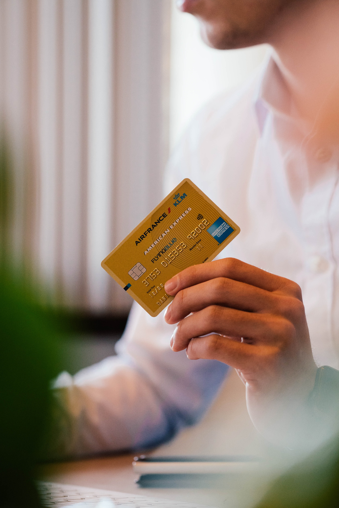

Benefits of Credit Card
Credit cards have become an important tool when it comes to personal finance. Listed below are a few benefits of credit card use:
1. Emergency use in case of fewer savings,
One of the benefits of credit card use is that it enables users to spend out of their pockets. Therefore, you can make purchases through a credit card when your savings are low. It comes in handy when you don’t have enough funds to make a purchase or deal with an exigency. Additionally, it gives a credit-free period of 45 days for repayment. Therefore, regardless of lower savings, you can handle any eventuality smoothly.
2. Improvement in credit score
A credit score is a number that shows how effectively you repay loans. Financial institutions and banks assess your credit score before issuing a loan. The higher the credit score, more will be the chances of accessing credit. Credit score depends on factors such as bill-paying history, debt, number, type of loan accounts owned, current usage of credit, duration of loan accounts, etc.
A higher credit score not only helps in getting loans quickly but also at a lower cost. A higher credit score gives the bargaining power to customers for receiving the best services. Several banks and NBFCs offer a lower interest rate to customers who have a good credit score. Additionally, you get a variety of options to choose from when your score is high. Therefore, it is always advisable to take a credit card at the beginning of your career, so that you can build a strong credit score and avail a home loan or personal loan in the future depending on your needs.
3. Purchases on EMI
You can choose to convert your billed amount on an expensive purchase into Easy Money Installment (EMI) over a long period of time through a credit card. This way, there won’t be any burden to repay the entire amount in one go. EMIs can help in increasing affordability for customers.
4. Cashback offers and deals on credit cards
Credit cards offer additional benefits to their customers. Several discount deals, cashback, and reward points are provided on payments that aren’t available in other financial instruments. Several credit cards also offer numerous privileges such as complimentary lounge access at domestic and international airports, complimentary access to OTT, access to gold courses globally, and birthday benefits.
5. Balance transfer credit card
There are a few credit cards that give the facility to transfer pending credit card dues to another credit card account, even if it’s not from the same bank. This way, you can lower your applicable interest charges. Suppose, you have high outstanding dues on one credit card with a high-interest rate. You can choose to transfer the dues to another credit card that offers a low-interest rate. Therefore, you can easily pay your dues by reducing your financial stress.
Explore Free Online Courses with Certificates
6. Maintain sound financial status
Being conscious of your spending and timely repayment of dues help in building a healthy financial status. Responsible use of credit helps in maintaining a good credit score, thus opening doors for better opportunities in the future.